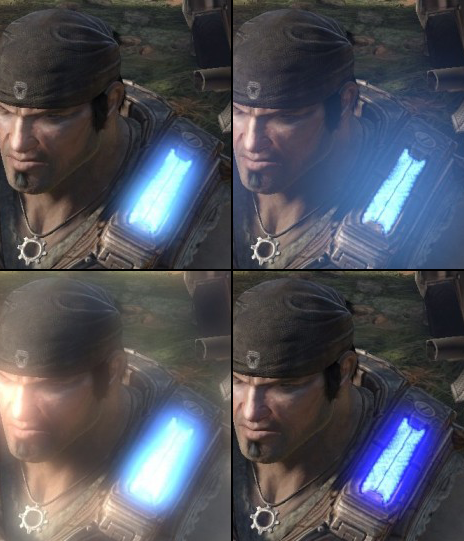
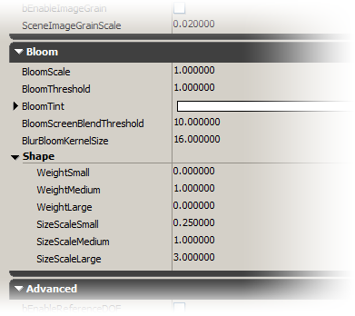
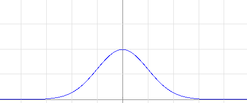
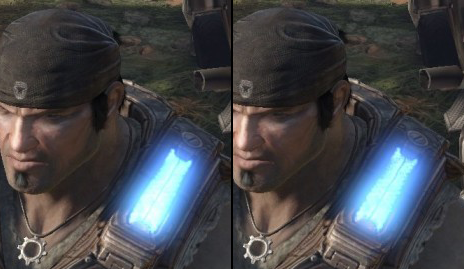

블룸 포스트 프로세스 이펙트
 문서 변경내역: 2010/10/11 Martin Mittring 작성. 홍성진 번역.
문서 변경내역: 2010/10/11 Martin Mittring 작성. 홍성진 번역.
개요
블룸이란 중간 정도의 렌더링 퍼포먼스 비용으로 이미지 렌더링에 사실감을 크게 더해줄 수 있는 현실에서의 광학 현상입니다. 훨씬 어두운 배경에 있는 매우 밝은 물체를 맨눈으로 바라볼 때도 블룸 현상을 목격할 수 있습니다. 그보다 밝아지면 (광선이나 렌즈 플레어같은) 다른 현상도 생길 수 있지만, 고전적인 블룸 효과에서는 다루지 않습니다. 보통 쓰는 (TV, TFT 등의) 디스플레이에서는 HDR(High Dynamic Range)이 지원되지 않기에, 너무 밝은 오브젝트는 렌더링할 수가 없습니다. 대신 빛이 필름에 내리쬐거나(필름 하부표면 분산) 카메라 앞에 내리쬘 때(유윳빛 유리 필터) 눈에서 벌어지는 현상(망막 하부표면 분산)을 흉내냅니다. 그 효과가 물리적으로야 항상 옳지는 않겠지만, 오브젝트의 상대적 밝기를 살려주거나 LDR(Low Dynamic Range) 이미지에 사실감을 더하는 데 도움이 될 수는 있습니다.
블룸 속성
블룸을 조절할 수 있는 속성은 UberPostProcessEffect (위버 포스트 프로세스 이펙트) 노드의 포스트 프로세싱 체인에서 찾을 수 있습니다.
주: 블룸 속성은 (DOFAndBloomEffect (피심도 및 블룸 이펙트)같은) 다른 노드에서도 찾을 수 있습니다만, (최적화도 덜되어 있고 기능도 덜한) 단지 하위 호환성때문에 있는 것들이니 사용하지 않는 것이 좋습니다.
거기서 찾을 수 있는 대부분의 속성은 PostProcessVolumes, WorldProperties, CameraActor, 그리고 일부 언리얼스크립트 접근가능 구조에서도 찾을 수 있습니다. 그러한 세팅은 다른 포스트 프로세스 이펙트와 마찬가지 방식으로 덮어쓸 수 있습니다.
다음 이미지는 같은 내용물의 속성을 다르게 조절한 결과물입니다:
|  |
왼쪽 위: 디폴트 블룸 세팅
오른쪽 위: KernelSize (커널크기) 크게
왼쪽 아래: Threshold (한계점) 작게
오른쪽 아래: 파랑 Tint (색조) |
에디터(체인)에서 보이는 속성은 이와 같습니다:

대부분 레벨의 PostProcessVolumes (포스트 프로세스 볼륨) 또는 WorldPoperties (월드 프로퍼티)에서 메인 세팅을 덮어씀에 유의하십시오.
블룸 모양 조절하기
블룸은 종종 분리가능한 가우시안(Gaussian) 블러 커널을 사용하여 구현합니다. 이를 통해 효과적인 블러링이 가능합니다. (퍼포먼스는 커널 반경에 선형이지만, 폭과 높이쪽에서 효과의 크기가 확장됩니다.)
가우시안 블러와 원본 결과물에 더하기식으로 혼합하는 방식을 사용하는 것이 딱 원하는 효과는 아닙니다. 딱 보기에는 괜찮아 보일 수 있(고, 실제로 많은 게임이 그렇게 출하되)지만, 품질의 수준을 한 단계 올리기 위해서라면 밝은 부분의 블룸은 좀 더 세밀하고, 감쇠 부분도 더 넓어져야 할 것입니다. 그런 효과를 내기 위해 기여되는 가우시안을 하나 둘 더 추가할 수도 있습니다. 가우시안 커브 셋의 반경과 가중치(weight)는 위버 포스트 프로세스 이펙트 노드에서 조절할 수 있습니다. 게임 내용물에 적용했을 때의 모습은 다음과 같습니다:
 |
왼쪽 위: 블룸 없이는 오브젝트의 밟기가 제대로 표시되지 않습니다.
오른쪽 위: 가우시안 하나만으로도 왼쪽 오브젝트는 괜찮습니다만, 오른쪽에는 그다지...
왼쪽 아래: 가우시안 둘을 쓰니 두 오브젝트 다 괜찮아 보입니다.
오른쪽 아래: 가우시안 셋을 쓰니 왠지 미묘하면서도 큰 스케일의 광채가 추가됩니다. |
가우시안 분포 커브의 모양은 다음과 같습니다:
|  |
| 제한된 폭의 가우시안 분포 커브를 나타내는 그래프입니다. |
스케일과 사이즈가 각기 다른 가우시안 커브 셋도 조합할 수 있습니다:
 |
빨강: 큰 가우시안 커브
파랑: 중간 가우시안 커브
초록: 작은 가우시안 커브 |
기여를 추가하여 원하던 모양을 구합니다:
 |
| 새로운 모양은 가운데는 선명하면서 거리에 따라 넓게 퍼지는 모양입니다. |
이 모양은 에디터에서도 (위 에디터 이미지의 "Shape" 부분 참고), 콘솔 명령을 통해서도 (이 페이지 끝부분 참고) 조절할 수 있습니다.
저해상도 블러링
블룸은 큰 품질 저하 없이도 저해상도로 가능합니다. 1/4 해상도(1/16 영역)으로도 괜찮았던 경험이 있습니다. 분리가능 가우시안 블러를 통해 큰 반경이 가능이야 하지만, 그것도 일정 시점에서는 꽤나 (수 밀리초) 비싸지게 됩니다. 여기서 할 수 있는 일은 해상도를 더 낮춰 계산하여 렌더링 퍼포먼스를 절약하는 겁니다.
하위 호환성을 위해 현재는 디폴트로 가우시안 하나를 씁니다. (가중치: 0/1/0) 사용자가 작언 것이나 큰 것에 대해 가중치의 양을 지정하면, 다른 시스템이 사용됩니다. 새로운 시스템에서 중간 가우시안은 반해상도로 수행됩니다. (즉 속도야 빨라지지만 품질이 감소되기도 한다는 뜻입니다.) 그러나 작은 가우시안은 일반 블룸 해상도로 수행됩니다. 큰 가우시안은 중간것의 반해상도로 수행됩니다. 이를 통해 아주 저렴한 값으로 매우 넓은 범위가 가능해 집니다.
톤매퍼 상호작용
최적의 품질을 위해 톤 매핑 이전에 씬에다 블룸이 추가됩니다. 즉 블루밍 근처 영역에 의해 더욱 밝아진 밝은 영역은 LDR 최대치로 부드럽게 수렴된다는 뜻입니다. (보통 여기서는 하얀색이지만, 번쩍이는 색에는 다른 색이 될 수가 있습니다.) 그렇게 밝은 영역의 디테일에 블룸이 음수 효과를 갖는 경우, ScreenBlendThreshold (화면 혼합 한계점) 속성을 조절해야 합니다.
|  |
| 아주 밝은 영역에 미세한 차이, 느껴지시나요? |
퍼포먼스 및 구현 세부사항
분리가능한 가우시안 블러 방법을 사용하니 반경에 따른 퍼포먼스가 거의 선형이었습니다. 반경은 또한 화면 해상도(, 좀 더 정확히는 시야 폭)와 함께 스케일되며, KernelSize (커널 크기)는 1280 해상도에 대한 픽셀로 정의됩니다. 커널 크기는 64로 제한해 놨습니다. (퍼포먼스상의 이유이며, 셰이더 편차를 줄이기 위함이기도 합니다.) 낮은 해상도때문에 픽셀 셰이더의 룩업을 16 번만 할 수 있습니다. (반경 64 -> 폭 128 -> 1/4 해상도는 32, 바이리니어 필터링된 샘플 16) 가우시안이 여럿 사용될 경우, 중간 것은 반해상도이며, 큰 것은 1/4 해상도입니다. 이는 품질과 퍼포먼스에 영향을 끼칩니다. 현재 결과 이미지는 부가 패스를 통해 결합되고 있(으니 개선의 여지가 있)습니다.
경험에 의하면 반경이 (64 이상) 클 때만 예전/디폴트 방법(가우시안 하나)에 비해 나은 퍼포먼스를 냈습니다.
쓸만한 콘솔 명령
-
BloomScale (블룸 스케일) - 블룸의 세기를 조절합니다.
-
BloomSize (블룸 사이즈) - 블룸 효과의 크기를 조절합니다.
-
BloomType (블룸 타입) - 내부적으로 사용되는 방법을 조절합니다.
-
BloomWeightSmall (블룸 작은쪽 가중치) - 작은 가우시안 블러의 가중치를 조절합니다. (UI 속성과는 달리 정규화 이후입니다.)
-
BloomWeightLarge (블룸 큰쪽 가중치) - 큰 가우시안 블러의 가중치를 조절합니다. (UI 속성과는 달리 정규화 이후입니다.)
모바일 지원
모바일 플랫폼에서 블룸은 System Settings 부분에 enable 시켜 둬야만 작동합니다. 고사양 모바일 기능으로 꽤나 비쌀 수 있으니 주의를 기울여 사용하셔야 합니다. 모바일 블룸 세팅은 MobilePostProcess 섹션 아래 DefaultPostProcessSettings 에서 설정할 수 있습니다. MobilePostProcess 아래 Bloom_Scale, Bloom_Threshold, Bloom_Tint 중 최소 하나는 덮어써야 블룸이 실제로 켜진다는 점 참고하시기 바랍니다. 또 한가지, WorldInfo 에서 이 값을 지정하면, 프로퍼티 목록에서 덮어쓰지 않았더라도 블룸이 켜지면 그 값을 사용합니다.